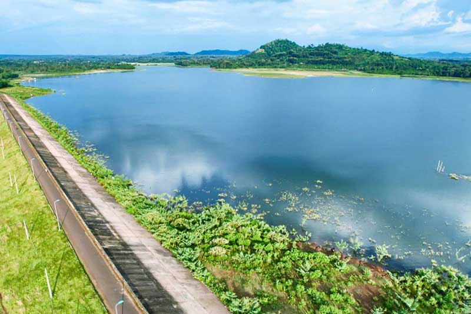

Đá voi mẹ
Nằm giữa một thung lũng nhỏ bằng phẳng trên địa bàn xã Yang Tao cách TP Buôn Ma Thuột khoảng 40 km về phía nam là một núi đá khổng lồ trơ trọi hiện lên ngay gần đường quốc lộ mà ai đi qua cũng dễ dàng nhận thấy. Núi đá Yang Tao hay còn được biết tới với cái tên núi Đá Voi Mẹ thực chất là một khối đá khổng lồ với chu vi ước chừng 500 m, dài 200 m và có độ cao 50 m. Đây được coi là tảng đá nguyên khối lớn nhất tại Việt Nam. Núi đá Yang Tao có tạo hình như một chú voi khổng lồ nằm tựa lưng vào đại ngàn Tây Nguyên hùng vĩ. Chính dáng “nằm” đặc biệt của chú Voi Mẹ này đã gắn cho nó không biết bao câu chuyện vừa thú vị, vừa thần bí.
Bảo tàng dân tộc đăklăk
Bảo tàng dân tộc Đắk Lắk là sự kết hợp độc đáo giữa nhà rông của người Ê Đê và nhà trệt của người M’Nông. Bảo tàng nằm trong khuôn viên Biệt điện Bảo Đại với bên ngoài trông bề thế và độc đáo. Bảo tàng trưng bày nhiều hiện vật của các dân tộc Tây Nguyên. Đến đây, du khách sẽ được chiêm ngưỡng công trình kiến trúc sáng tạo và những hiện vật phong phú, từ đó hiểu thêm về cuộc sống và nền văn hóa dân tộc nơi đây.
Cụm thác Đray Nur, Đray Sap
Người địa phương gọi thác Đray Nur là thác Vợ, còn Đray Sap là thác Chồng, cả hai thác đều thuộc dòng sông Serepok. Ẩn sau 2 ngọn tháp này là một truyền thuyết thú vị của núi rừng, là truyền thuyết gì thì khi đến đây du khách sẽ được “bật mí”. Kinh nghiệm du lịch Đắk Lắk của nhiều người cho biết, nếu đến đây vào mùa mưa sẽ thú vị hơn, nhưng đi lại sẽ vất vả hơn.
Vườn quốc gia Yok Đôn
Nằm trên 2 huyện thuộc tỉnh Đắk Lắk và 1 huyện thuộc tỉnh Đắk Nông, Vườn quốc gia Yok Đôn được xem là vườn quốc gia rộng nhất Việt Nam. Đến với Yok Đôn để trải nghiệm những thú vị như cưỡi voi, đi tản bộ trong rừng, đạp xe địa hình băng qua các cánh rừng nguyên sinh, du thuyền độc mộc trên dòng Seperok...

Buôn Đôn
Lời bài hát “Chú voi con ở Bản Đôn...” chính là đang nhắc đến địa danh du lịch Buôn Đôn nổi tiếng của Đắk Lắk. Đây là nơi sinh sống của các dân tộc ít người như Ê Đê., M’Nông, Gia Rai, Lào, Thái... Nếu đến Đắk Lắk mà không ghé Buôn Đôn thì xem như bạn chưa đi du lịch ở Đắk Lắk. Tại đây, bạn sẽ được cưỡi voi đi tham quan khắp buôn, sau đó đến địa điểm nổi tiếng nhất Buôn Đôn là ngôi nhà của huyền thoại săn voi Amakông.
Hồ lăk, biệt thự Bảo Đại
Với chiều rộng 5km, Hồ Lắk là hồ nước ngọt tự nhiên lớn thứ 2 ở Việt Nam. Có gì thú vị ở địa điểm du lịch Đắk Lắk này? Đó là hồ được thông sang tận Biển Hồ ở Pleiku. Ngoài ra, tại đây du khách sẽ có những trải nghiệm tuyệt vời như đi thuyền ngắm hồ, dạo quanh các buôn làng, ghé chợ ăn thử các món ngon... Đặc biệt nhất là ở đây có Biệt thự Bảo Đại nằm ở trên đồi – nơi du khách có thể ngắm nhìn được toàn Hồ Lắk.
Buôn Akô Đhông
Nằm cách trung tâm khoảng 2 km, người ta nói uôn Akô Đhông chính là nguồn cội tạo nên Tp Buôn Ma Thuột của ngày hôm nay. Đồng thời, buôn Akô Đhông cũng chính là buôn làng hùng mạnh và giàu có nhất của thời xưa. Minh chứng là những căn nhà cổ vẫn còn giữ nguyên vẹn để phục vụ cho nhu cầu tham quan của du khách.
Khu du lịch sinh thái Kotam
Nằm cách Tp Buôn Ma Thuột khoảng 7 km, đây là một trong những địa điểm du lịch thú vị nhất không thể bỏ lỡ khi đến Đắk Lắk. Nơi đây có những con đườn rực vàng hoa dã quỳ, bạn nên đến đây vào tháng 12 để chiêm ngưỡng mùa dã quỳ nở rộ. Ngoài ra, còn nhiều điều thú vị khác nữa để bạn khám phá, bao gồm văn hóa của người dân Tây Nguyên và những mặt hàng thổ cẩm gắn liền với họ.
Khu du lịch sinh thái Ea Kao
Đến Đắk Lắk du lịch, bạn hãy dành một ngày cho khu du lịch sinh thái Ea Kao. Tại đây, bạn có thể tổ chức cắm trại hoặc picnic ngoài trời, lý tưởng cho các hoạt động teambuilding.
Cây Kơ Nia cổ thụ
Nằm trong khuôn viên nhà văn hóa trung tâm tỉnh, Cây Kơ-nia cổ thụ là loại cây gỗ lớn, cao khoảng 15-30m. Cây Kơ-nia mang một ý nghĩa tâm linh lớn, được xem là nơi trú ngụ của các vị thần. Đó là lý do cây Kơ-nia không bao giờ bị chặt phá và tồn tại đến bây giờ.

Làng cà phê Trung Nguyên
Bạn nghe đến cà phê Trung Nguyên mỗi ngày, bạn uống nó mỗi khi có dịp, vậy tại sao bạn lại bỏ lỡ cơ hội thăm mảnh đất sản sinh ra thương hiệu cà phê nổi tiếng này? Tham quan cũng được, đến đây để uống ly cà phê thơm ngon đúng chuẩn Trung Nguyên cũng được, hay đơn giản là đến để mua một vài gói cà phê về làm quà cho người thân, bạn bè... bạn cũng đừng bỏ lỡ điểm đến nổi tiếng ở Đắk Lắk này.